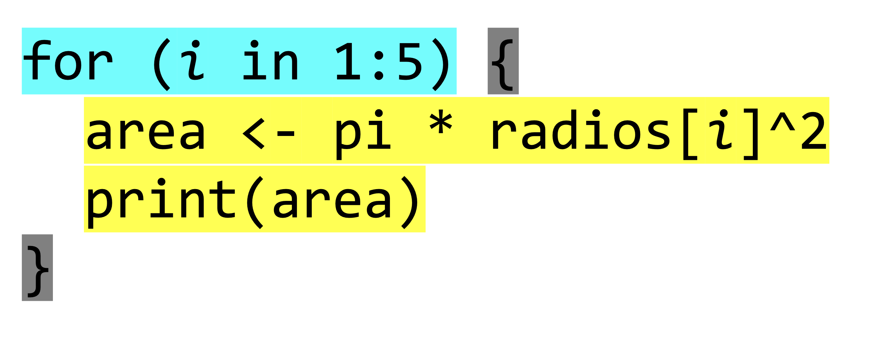

library(tibble)
pinos <- tibble(
id = 1:10,
especie = c("sylvestris", "nigra", "pinaster", "sylvestris", "nigra",
"pinaster", "sylvestris", "nigra", "pinaster", "sylvestris"),
dbh_cm = c(30.5, 6.5, 7.2, 5.0, 28.3, 35.1, 7.0, 6.8, 40.0, 32.7),
altura_m = c(12.5, 13.2, 10.0, 9.5, 14.0, 15.0, 8.2, 11.8, 14.5, 12.0)
)Estructuras de Control en Programación (R y Python)
Antonio J. Pérez-Luque ![]()
Instituto de Ciencias Forestales (CIFOR) | INIA-CSIC (Madrid)
2025-03-04
Introducción
- Estructuras de control: Herramientas fundamentales en programación que permiten modificar el flujo de ejecución de un programa según ciertas condiciones o repeticiones.
- Son esenciales para tomar decisiones dinámicas, realizar acciones repetitivas y dirigir cómo se ejecuta el código, haciéndolo más flexible y adaptable.
Tipos de Estructuras de Control
Estructuras Secuenciales: Ejecutan instrucciones una tras otra
Estructuras de Selección (Condicionales): Permiten que un bloque de código se ejecute o no, en función de una condición. Dependiendo de si una condición es
TRUEoFALSE, el algoritmo toma un camino u otro. Tipos:- Simple: Una única condición (
if). - Doble: Incluye una alternativa (
if-else). - Múltiple: Varias alternativas posibles (
switch).
- Simple: Una única condición (
Estructuras de Iteración (Bucles): Permiten repetir un bloque de código varias veces mientras se cumpla una condición o sobre una secuencia de elementos. Tipos:
for: Itera sobre una secuencia conocida.while: Repite mientras una condición seaTRUE.repeat: Ejecuta indefinidamente hasta que se use unbreakpara detenerlo.
2. Condicionales simple
- Permiten que un bloque de código se ejecute o no, en función de una condición.
- Dependiendo de si una condición es
TRUEoFALSE, el algoritmo toma un camino u otro.
Recuerda los operadores en R:
==(igualdad)!=(distinto)>(mayor que)<(menor que)>=(mayor o igual que)<=(menor o igual que)
2. Condicionales simple
pino1 <- pinos[1, ]
if (pino1$dbh_cm > 7.5) {
# calcula el área basal del pino en m2
area_basal <- pi * ((pino1$dbh_cm / 100) / 2)^2
print(paste(
"El árbol con ID", pino1$id,
"pertenece a la especie Pinus", pino1$especie,
"y tiene un área basal de",
round(area_basal, 4), "m².", sep = " "
))
}[1] "El árbol con ID 1 pertenece a la especie Pinus sylvestris y tiene un área basal de 0.0731 m²."Ejemplo práctico
- Se han muestreando diferentes plots circulares en pinares de repoblación para evaluar la densidad de plantación
- En cada plot (de radio variable) anotamos el número de individuos de cada especie
- ¿podrías escribir un código que calcule el área muestreada en cada plot?
Solucionario
calcula_area <- function(x) {
return(pi * x^2)
}
pinares$area2_m2 <- sapply(pinares$radio_m, calcula_area)
pinares# A tibble: 5 × 5
id_plot radio_m n_individuos area_m2 area2_m2
<chr> <dbl> <dbl> <dbl> <dbl>
1 syl1 5 10 78.5 78.5
2 syl2 6 12 113. 113.
3 nig1 7 15 154. 154.
4 nig2 8 18 201. 201.
5 nig3 9 20 254. 254. Uso de bucles
¿Qué son los bucles en programación?
- Son secuencias código que se ejecutan repetidas veces, hasta que la condición asignada a dicho bucle deja de cumplirse
¿Por qué usarlos?
- Para iterar sobre elementos de un conjunto de datos.
- Para automatizar tareas repetitivas.
- Para realizar cálculos iterativos.
Tipos de bucles:
for: Iteraciones sobre elementos definidos.while: Iteraciones controladas por una condición.repeat: Repeticiones indefinidas con una interrupción explícita.
for loop: iteraciones determinadas
Ejecuta un bloque de código para cada elemento de una secuencia predefinida.
for (item in list_of_items) {do_something(item)
}
Ejemplo:
Estudio en detalle del bucle
- 1
-
Iteración:
itoma el valor de cada elemento de la listaradios. - 2
- Ejecución del código: Se calcula el área de cada plot y se imprime por pantalla
- 3
- Finalización: Si hay mas elementos dentro de la lista, el bucle se repite. Cuando se haya procesado todos los elementos, el bucle termina
[1] 78.53982
[1] 113.0973
[1] 153.938
[1] 201.0619
[1] 254.469Elementos del bucle

Elementos del bucle: Índice
Looping por valor: cuando se itera sobre un valor directamente
- Más compacto y legible
- Directamente trabaja con los valores del vector
- Útil cuando no necesitas los índices, solo los valores
Elementos del bucle: Índice
Looping por índice: cuando se itera sobre un índice de la lista o del vector
- Más flexible y versátil
- Permite acceder tanto a los índices como a los valores
- Útil cuando necesitas los índices para realizar operaciones específicas
¿looping por índice o por valor?
- El resultado es el mismo, pero el enfoque depende de la tarea que estés realizando
- El bucle por índice permite realizar operaciones más complejas y personalizadas
- Permite almacenar los datos calculados en el bucle
- 1
- Podemos crear un vector vacío y almacenar los resultados en cada iteración
- 2
-
Crear un vector vacío tipo numérico con la longitud de la lista
radios
¿looping por índice o por valor?
Práctica 1
Escribe un bucle que permita calcular el tamaño de los plots de las zonas de muestreo en hectáreas
Práctica 2
Completa el siguiente bucle para que imprima los nombres de las especies de los pinares
Práctica 3
Escribe un bucle que calcule la densidad de árboles para cada parcela en pies/hectárea
Code
- 1
- Dos vectores de datos
- 2
- Objeto donde almacenar los resultados
- 3
-
Itera sobre el primer vector (
radios) para calcular el área - 4
-
Itera sobre el seguno vector (
arboles) para calcular la densidad
Práctica 3
- ¿Podría actuar sobre un solo
data.frameotibble? - ¿Podría almacenar los resultados en ese mismo
tibble?
Code
# A tibble: 5 × 5
id_plot radio_m n_individuos area densidad
<chr> <dbl> <dbl> <dbl> <dbl>
1 syl1 5 10 0.00785 1273.
2 syl2 6 12 0.0113 1061.
3 nig1 7 15 0.0154 974.
4 nig2 8 18 0.0201 895.
5 nig3 9 20 0.0254 786.Aplicaciones
- looping en funciones
- looping sobre dataframes o tibbles ()
- Looping sobre archivos y directorios
- Almacenar datos
- Bucles anidados
2. while Loop: Repetición Condicional
Ejecuta un bloque de código mientras una condición sea verdadera
Inicializar las varbiables
i <- 1
while (i <= 3) {
bosques$area[i] <- (pi * bosques$radio_m[i]^2 / 10000)
bosques$densidad[i] <- bosques$n_individuos[i] / bosques$area[i]
i <- i + 1
}
bosques# A tibble: 5 × 5
id_plot radio_m n_individuos area densidad
<chr> <dbl> <dbl> <dbl> <dbl>
1 syl1 5 10 0.00785 1273.
2 syl2 6 12 0.0113 1061.
3 nig1 7 15 0.0154 974.
4 nig2 8 18 0.00785 1273.
5 nig3 9 20 0.00785 1273.bosques$area <- vector(mode = "numeric", length = nrow(bosques))
bosques$densidad <- vector(mode = "numeric", length = nrow(bosques))
i <- 1
while (i <= 3) {
bosques$area[i] <- (pi * bosques$radio_m[i]^2 / 10000)
bosques$densidad[i] <- bosques$n_individuos[i] / bosques$area[i]
i <- i + 1
}
bosques# A tibble: 5 × 5
id_plot radio_m n_individuos area densidad
<chr> <dbl> <dbl> <dbl> <dbl>
1 syl1 5 10 0.00785 1273.
2 syl2 6 12 0.0113 1061.
3 nig1 7 15 0.0154 974.
4 nig2 8 18 0 0
5 nig3 9 20 0 0 3. repeat Loop: Repetición Indefinida
¿Qué es?
- Ejecuta un bloque de código indefinidamente hasta que se usa
break.
Ejemplo:
4. Alternativas Vectorizadas (apply, tapply)
¿Qué son?
- Métodos eficientes y vectorizados para realizar operaciones en matrices o listas.
Ejemplo:
Ventajas:
- Más rápidas y concisas que los bucles tradicionales.
- Mejor adaptadas para trabajar con grandes volúmenes de datos.
5. Comparación con purrr
¿Qué es purrr?
purrres un paquete del ecosistema tidyverse que facilita la programación funcional.
Ejemplo Comparativo
Usando un bucle for:
Usando purrr::map:
library(purrr)
species_means <- map(unique(iris$Species), ~ mean(iris$Sepal.Length[iris$Species == .x]))
print(species_means)Ventajas de purrr:
- Sintaxis más compacta y legible.
- Integración directa con otras herramientas del tidyverse.
- Mejora la eficiencia para operaciones funcionales repetitivas.
6. Comparación General
| Tipo de Bucle | Ventajas | Desventajas |
|---|---|---|
for |
Simple y flexible | Menos eficiente con grandes datos |
while |
Útil para condiciones dinámicas | Mayor riesgo de bucles infinitos |
repeat |
Gran control manual | Requiere interrupción explícita |
apply/tapply |
Altamente eficiente y compacto | Menos intuitivo para principiantes |
purrr::map |
Sintaxis legible y funcional | Requiere instalación adicional |
Conclusión
- Básico: Los bucles (
for,while,repeat) son fundamentales para aprender programación iterativa. - Avanzado: Las funciones vectorizadas (
apply,tapply) y paquetes comopurrrson ideales para mejorar el rendimiento y la legibilidad. - Recomendación: Usa bucles simples para aprender y alterna con soluciones vectorizadas o funcionales para proyectos más complejos.
¿Alguna duda?
Ayuda JDC2022-050056-I financiada por MCIN/AEI /10.13039/501100011033 y por la Unión Europea NextGenerationEU/PRTR

Si usas esta presentación puedes citarla como:
Pérez-Luque, A.J. (2025). Búsqueda de Datos primarios de Biodiversidad. Material Docente de la Asignatura: Ciclo de Gestión de los Datos. Master Universitario en Conservación, Gestión y Restauración de la Biodiversidad. Universidad de Granada. https://ecoinfugr.github.io/ecoinformatica/

Master Universitario en Conservación, Gestión y Restauración de la Biodiversidad